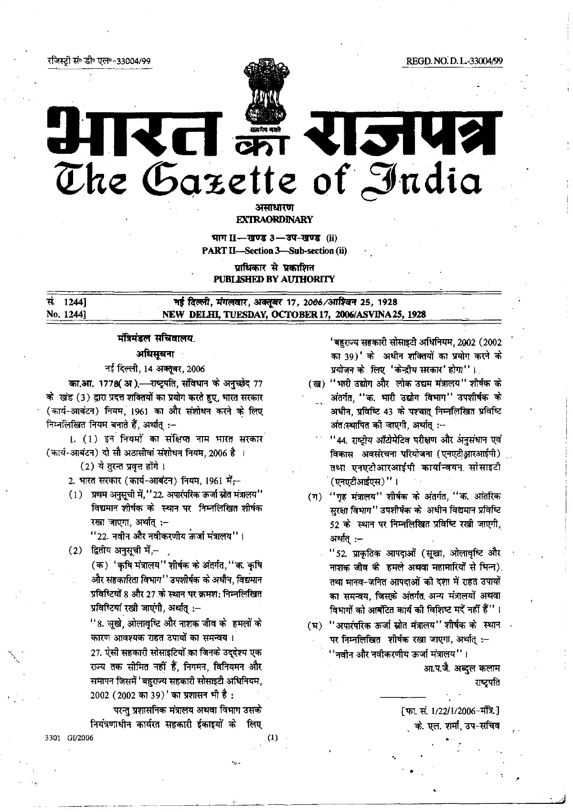
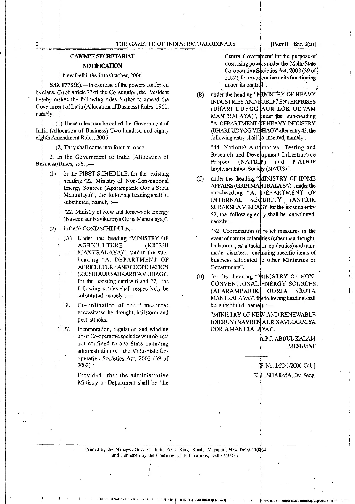

Amendment #288 (S.O. 1778(E), 2006)
5 changes: 1 to the First Schedule, 4 to the Second Schedule. 5 applied
What it did to the ministries
- renamedMinistry of Non-Conventional Energy Sources is renamed Ministry of New and Renewable Energy change 1, 5 · histories: New and Renewable Energy
The order, page by page
Page 1 of 2

Page 2 of 2

12345Schedule 1 › Ministry of Non-Conventional Energy Sources
- 22. Ministry of New and Renewable Energy
applied at schedule 1 › ministry 22 in the Rules after #288
Schedule 2 › MINISTRY OF AGRICULTURE › DEPARTMENT OF AGRICULTURE AND COOPERATION › entry 8; Schedule 2 › MINISTRY OF AGRICULTURE › DEPARTMENT OF AGRICULTURE AND COOPERATION › entry 27
- 8. Co-ordination of relief measures necessitated by drought, hailstorm and pest-attacks.
- 27. Incorporation, regulation and winding up of Co-operative societies with objects not confined to one State including administration of 'the Multi-State Cooperative Societies Act, 2002 (39 of 2002)':
- Provided that the administrative Ministry or Department shall be 'the : Printed by the Manager, Govt. of India Press and Published by the Controller Central Government' for the purpose of exercising powers under the Multi-State Co-operative Societies Act, 2002 (39 of 2002), for co-operative units…
applied at schedule 2 › ministry MINISTRY OF AGRICULTURE › department A › part I › entry 8 in the Rules after #288
read page break
after Schedule 2 › MINISTRY OF HEAVY INDUSTRIES AND PUBLIC ENTERPRISES › DEPARTMENT OF HEAVY INDUSTRY › entry 43
- 44. National Automative Testing and Research and Development Infrastructure Project (NATRIP) and NATRIP Implementation Society (NATIS)
applied at schedule 2 › ministry MINISTRY OF HEAVY INDUSTRIES AND PUBLIC ENTERPRISES › department A › entry 44 in the Rules after #288
Schedule 2 › MINISTRY OF HOME AFFAIRS › DEPARTMENT OF INTERNAL SECURITY › entry 52
- 52. Coordination of relief measures in the event of natural calamities (other than drought hailstorm, pest attacks or epidemics) and manmade disasters, excluding specific items of business allocated to other Ministries or Departments
applied at schedule 2 › ministry MINISTRY OF HOME AFFAIRS › department A › group_heading II › entry 52 in the Rules after #288
Schedule 2 › MINISTRY OF NON- CONVENTIONAL ENERGY SOURCES
- MINISTRY OF NEW AND RENEWABLE ENERGY (NAVEEN AUR NAVIKARNIYA ! OORJA MANTRALAYA)
applied at schedule 2 › ministry MINISTRY OF NEW AND RENEWABLE ENERGY (NAVEEN AUR NAVIKARNIYA ! OORJA MANTRALAYA) in the Rules after #288
How this document was read
Edits to the reading
| Date | By | Edit | Before → after |
|---|---|---|---|
| 5 November 2026 | mukundesh | word corrected |
From the Government of India (Allocation of Business) Rules, 1961 and their amendments, as published by the Cabinet Secretariat (cabsec.gov.in), read by orgpedia. The readings of the older scanned gazettes have known gaps.